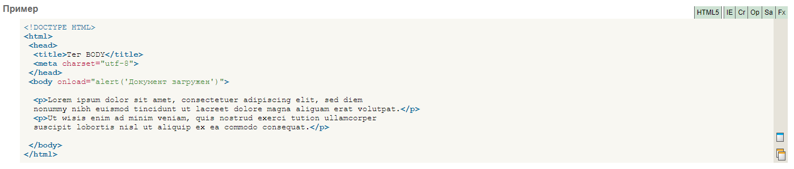

Тег -body- также применяется для определения цветов ссылок и текста на веб-странице. Подобная практика в HTML 4 осуждается и взамен для указания цветовой схемы рекомендуется использовать стили, применяя их к селектору BODY. Тем не менее, большинство атрибутов до сих пор поддерживается разными браузерами.
Часто тег -body- используется для размещения обработчика событий, например, onload, которое выполняется после того, как документ завершил загрузку в текущее окно или фрейм.
Открывающий и закрывающий теги -body- на веб-странице не являются обязательными, однако хорошим стилем считается их использование, чтобы определить начало и конец HTML-документа.
